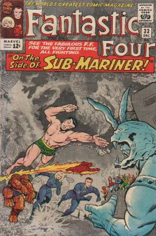

|
|
Comics of
By 1961, Stan Lee and Jack Kirby had done more for the comic-book industry than just about anyone else in the business. Little did anyone know they were just warming up. Fantastic Four #1 is nothing less than the comic book that put Marvel on the map. Before Spider-Man, the Hulk, the X-Men, or anything else emerged from the self-styled "House of Ideas," there was the Fantastic Four, breaking all the superhero rules and taking comic-book adventure -- not to mention comic-book sales -- to a new level. Legend has it that Marvel publisher Martin Goodman had seen the phenomenal success that DC was enjoying with its newly revived heroes, and the Jusitice Leage of America a team-up book that featured all the heroes fighting together was one of its biggest bestsellers. He gave Lee and Kirby the task of creating a new super-team book that could measure up to the Distinguished Competition's book. They did it by taking every superhero cliché and throwing them out the window. Their team had no secret identities to hide, and they were a family more than a team -- literally, in the case of Sue and Johnny Storm (Sue and Reed would eventually get married -- another comics first). Reed Richards was a scientist who more often than not used his brains, not his elastic fist, to win a battle. Johnny was a teenager who was a hero in his own right, and not the sidekick of someone else (and he was a clever way to bring back the name, if not the character, of the Human Torch). And Ben Grimm, the rocky-faced Thing, was a reluctant hero whose gruff demeanor masked the self-pity he felt inside, knowing his great strength and fame came at a great price. Fantastic Four #33- Lady Dorma goes to the surface to get the Fantastic Four to help Namor. Reed exposes the Four to a spray that creates perpetual oxygen around them so they can breathe underwater and go to help Namor. Attuma’s troops attack the FF as they arrive on the scene. As they get closer they notice huge ships heading for Atlantis. Namor’s troops are running out of weapons to fire, but Namor drives them onward. Attuma says that any other opponent would have surrendered long ago. Attuma orders that the Globules of Darkness be dispersed. The globules explode and Namor is left in darkness. Namor flies out of the darkness to take the offensive. As Namor challenges Attuma to hand to hand combat Attuma’s troops are watching with a machine that sends out subsonic sound waves that will drain Namor’s strength making it easy for Attuma to win. Invisible Girl puts a force field around them and the machine explodes from feedback. The FF span out to take down Attuma’s other traps to aid Namor. Attuma says to Namor that he is the conqueror that the legends foretold of, and that Namor has grown weak and soft. Thing destroys an ionic cannon. The spray that allows the Fantastic Four to breathe underwater is close to running out. Namor flips Attuma and shatters his sword. Attuma activates disintegrator ray beneath his helmet. Sue turns Namor invisible to prevent his death. Namor grabs the weapons of Attuma’s helmet as the FF is forced to head to the surface. Namor beats on Attuma until Attuma surrenders. Namor orders that the guards take Attuma and his followers to the gates of Atlantis so that they might never enter again.
RETURN TO FANTASTIC FOUR'S INTRODUCTION PAGE
|